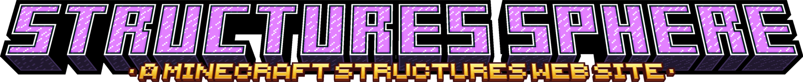

Manuel des Structures
Un site de FloLeCrafteur
Un site de FloLeCrafteur
Cette partie du site vous permet de suivre un Manuel comme un LEGO pour construire des Structures.
Cette partie est surtout réservée à ceux qui désirent avoir ces structures sur leur monde survie.
Contrairement à la partie principale du site, où vous pouvez télécharger des structure, cette partie me
demande un temps énorme puisqu'il faut que je m'occupe de créer tous les assets pour faire comme un
manuel de LEGO, avec chaques étapes, les blocs qu'ils vous faut ET leur crafts.
Le Manuel des Structures arrivera prochainement